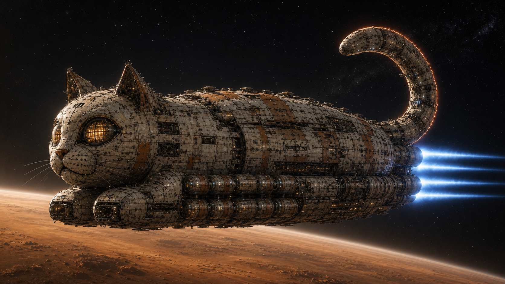

Spend power on exhaust velocity.
Charged fusion products expand through the magnetic nozzle with minimal added mass. Specific impulse is highest and thrust is lowest—the efficient setting for long interplanetary burns.

U.C.F. Engineering / Propulsion Systems
One fusion source serves three operating regimes: efficient direct-plasma cruise, propellant-augmented thrust, and high-output ship power. The arrangement is speculative. The bookkeeping is not.
System architecture
Select a mode to trace the active paths. The reactor is one part of a complete propulsion chain: confinement, conversion, propellant handling, a magnetic nozzle, shielding, and heat rejection.
Operating regimes
Charged fusion products expand through the magnetic nozzle with minimal added mass. Specific impulse is highest and thrust is lowest—the efficient setting for long interplanetary burns.
Hydrogen or deuterium enters the plasma edge, raising exhaust mass flow. Thrust increases while exhaust velocity and propellant economy fall.
A direct converter feeds the high-voltage bus. Magnets, cryogenics, cargo refrigeration, avionics, and habitat loads remain supplied at minimum thrust.
Propulsion trade
Augmented mode does not add energy. It distributes available power across more exhaust mass. The chart is normalized and avoids claiming performance no flight article has demonstrated.
Loaf-class installation
D–³He operation still produces D–D side reactions, bremsstrahlung, activation, and waste heat. U.C.F. plans assume a neutron blanket, aft exclusion zone, remote maintenance, replaceable components, and generous tail-radiator margin. No bowl leaves the depot on optimism alone.
Engineering archive
Review compact fusion, brachistochrone routes, fleet geometry, and habitat systems.